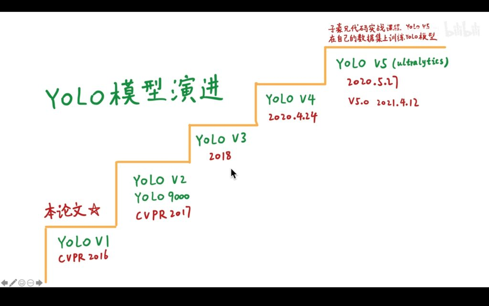
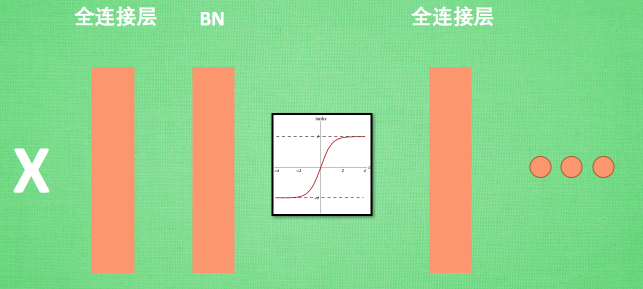
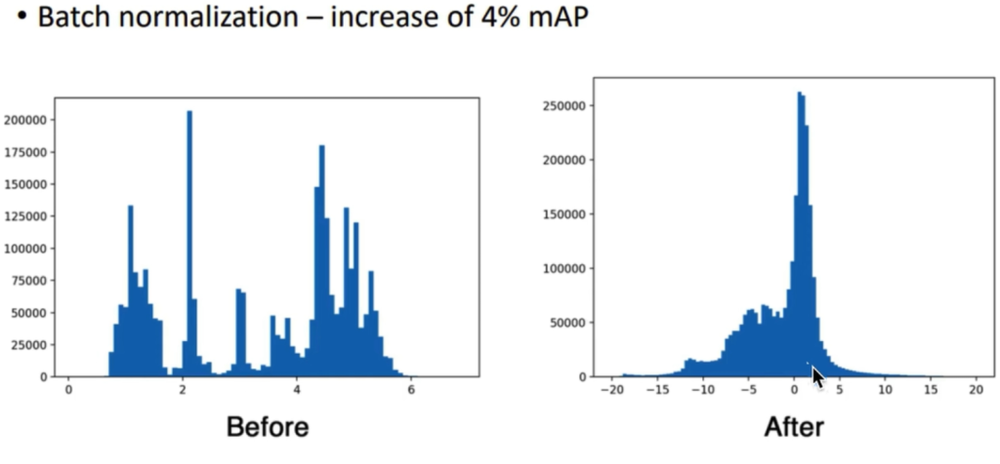
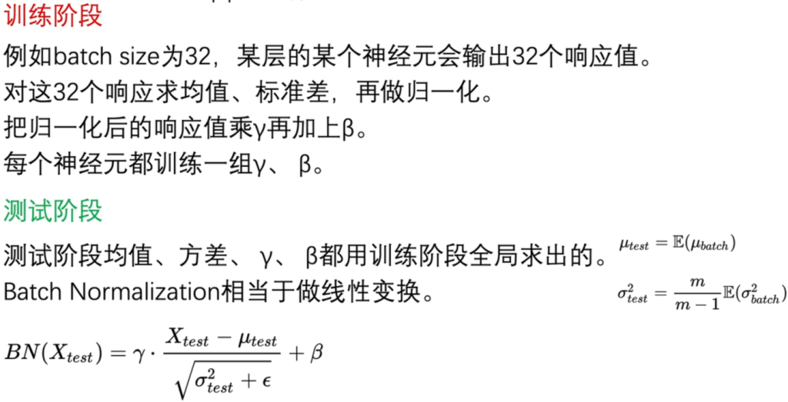
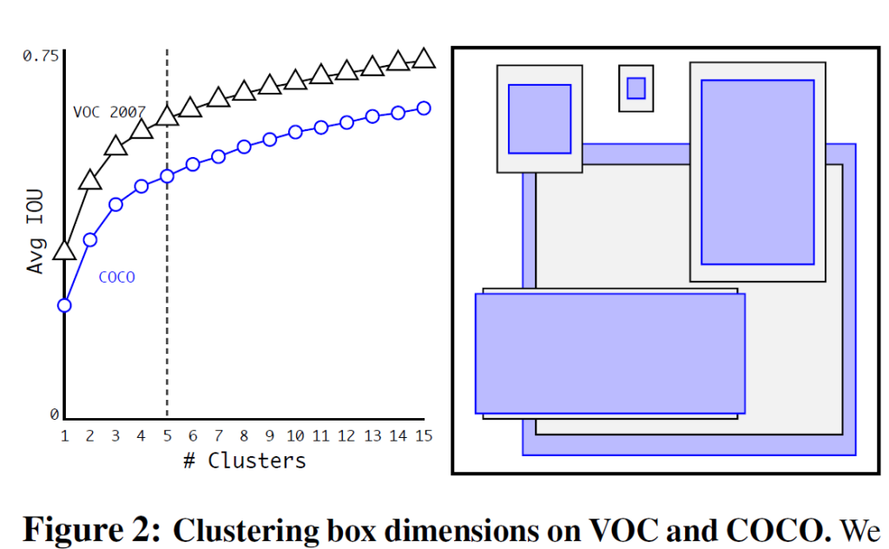
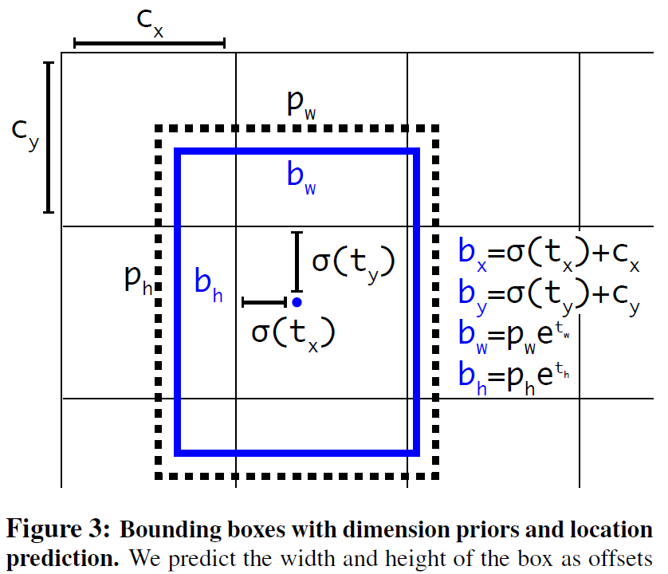
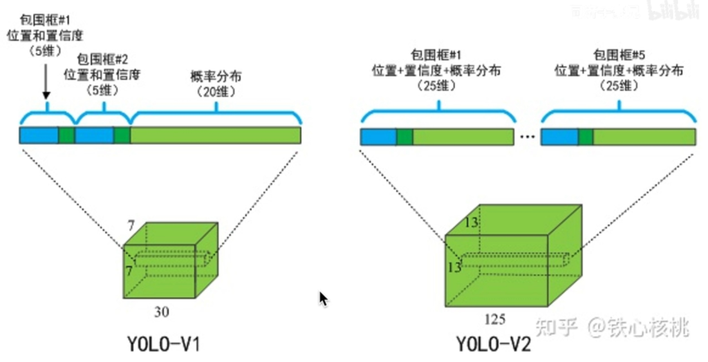
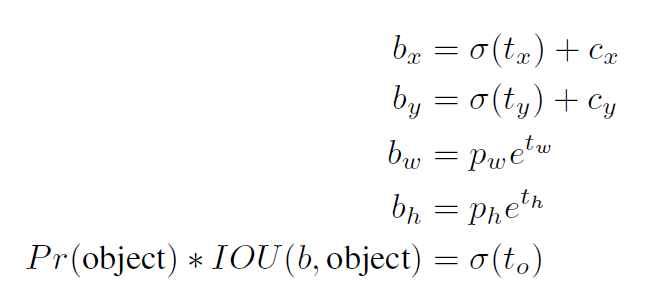
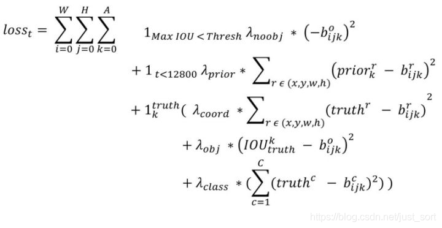
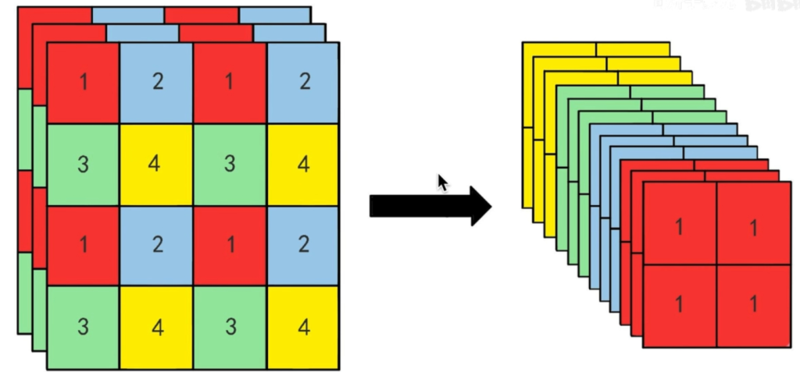

YOLOv2(YOLO9000)笔记
学习内容来源：同济子豪兄的个人空间_哔哩哔哩_bilibili
作者：Joseph Redmon, Ali Farhadi
9000：九千多个类
相比于v1，v2添加了anchor，batch normalization，多尺度训练等。
模型演进
YOLOv1缺点
- 准确度低
- 定位性能差
- recall低（检测出全部目标能力）
- 检测小目标、密集目标差
Batch Normalization批标准化
强行将神经元的输出集中到0附近。
BatchNorm就是在深度神经网络训练过程中使得每一层神经网络的输入保持相同分布。
Batch normalization 的 batch 是批数据, 把数据分成小批小批进行随机梯度下降 ，而且在每批数据进行前向传递 的时候, 对每一层都进行 normalization的处理,。在全连接层和激励曾之间加入BN层。
在神经网络中, 数据分布对训练会产生影响. 比如某个神经元 x 的值为1, 某个 Weights 的初始值为 0.1, 这样后一层神经元计算结果就是 Wx = 0.1; 又或者 x = 20, 这样 Wx 的结果就为 2。现在还不能看出什么问题, 但是, 当我们加上一层激励函数, 激活这个 Wx 值的时候, 问题就来了. 如果使用 像 tanh 的激励函数, Wx 的激活值就变成了 ~0.1 和 ~1, 接近于 1 的部已经处在了 激励函数的饱和阶段, 也就是 x 无论再怎么扩大, tanh 激励函数输出值也还是接近1。
批标准化
我们为了避免这种情况，就会对数据进行归一化，对于每个隐层神经元，把逐渐向非线性函数映射后向取值区间极限饱和区靠拢的输入分布强制拉回到均值为0方差为1的比较标准的正态分布，使得非线性变换函数的输入值落入对输入比较敏感的区域，以此避免梯度消失问题。整理学习之Batch Normalization（批标准化）_笨笨犬牙的博客-CSDN博客
BN效果
理解
通过BN可以大大加快收敛，改善梯度，远离饱和区，起到正则化作用，代替dropout，BN层一般出现在线性层的后面，激活函数的前面。
High Resolution Classifier高分辨率分类器
可以直接使用大分辨率图片
Anchor，Dimension Clusters，Direct location prediction
框有了区别。论文中分成13*13个grid cell，各包含5个anchor。grid cell的长宽为偶数个。
v1中每个gridcell就30个参数，而v2中则有(20+4+1)*5=125个数，每个anchor各自负责类别分类。



使用聚类的方法，5个anchor就可以达到9个手工选择anchor的效果。

损失函数
论文中无明确指出。
[ref]目标检测算法之YOLOv2损失函数详解_just_sort的博客-CSDN博客[/ref]
遍历所有的anchor
① 只看形状，不看位置
② 是否是模型训练早期（前12800迭代）
③ 预测框负责预测物体
Fine-Grained Features细粒度特征

Multi-Scale Training
多尺度图片训练
骨干网络
Darknet19